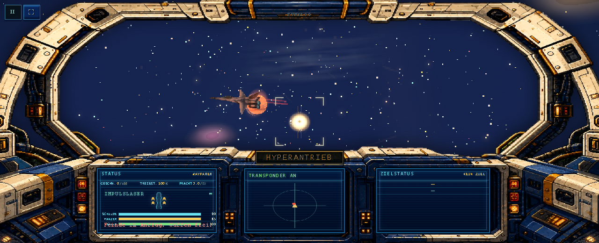
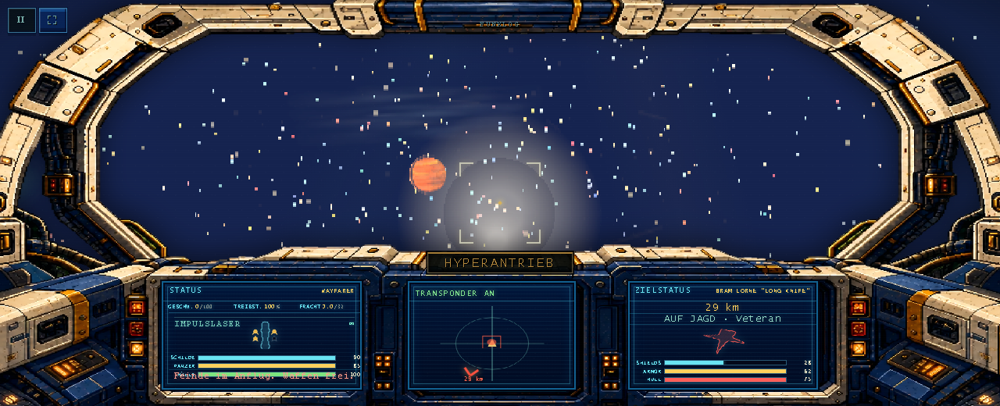
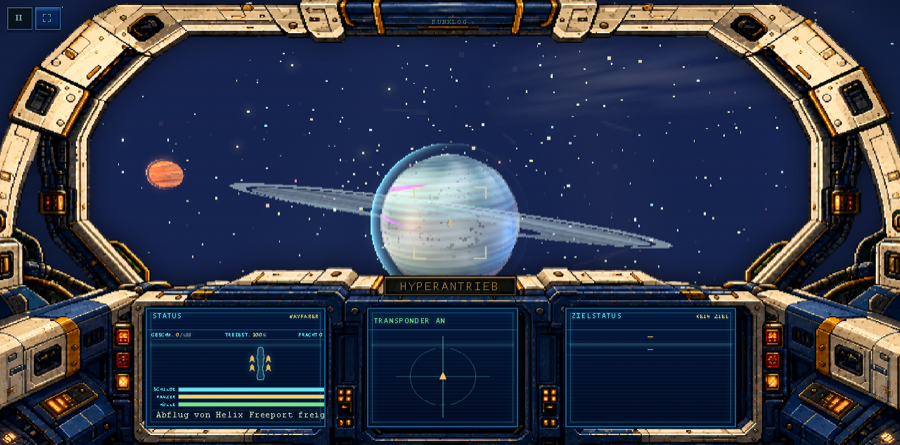
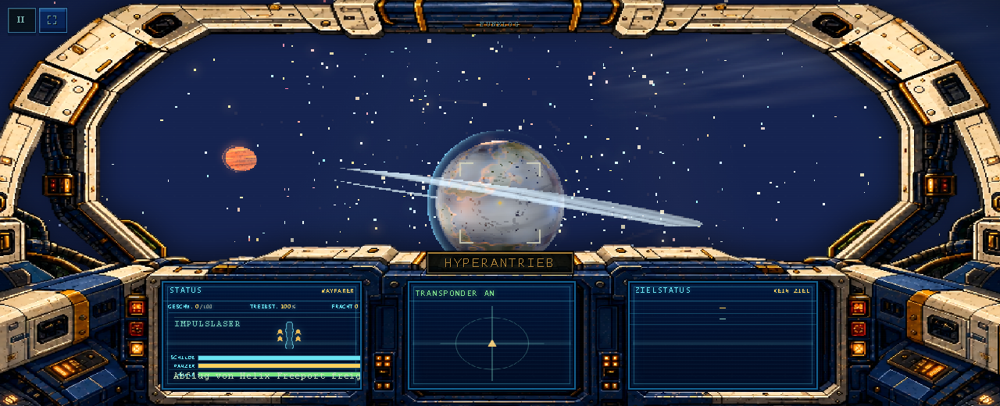
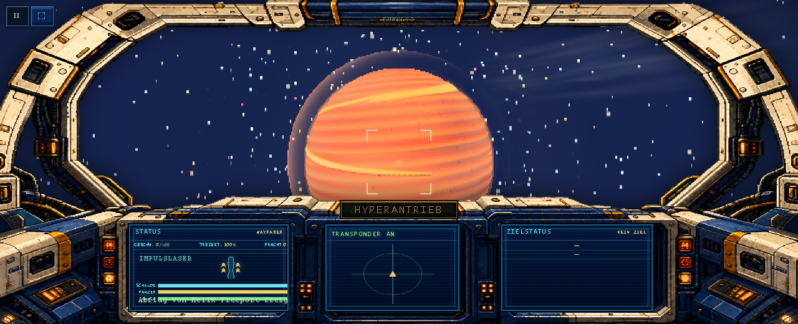
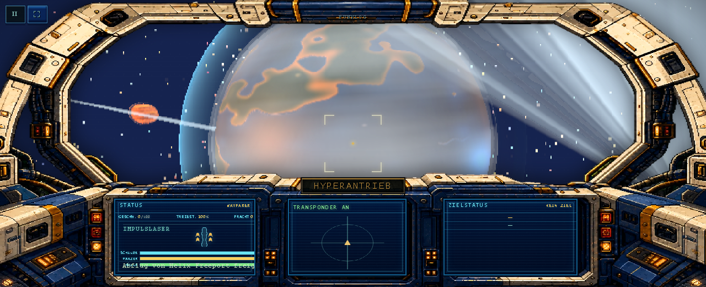

Pieces
| Piece | Bar ref | Status | Round | Notes |
|---|---|---|---|---|
| 1 · Laser bolts + impact FX | ed-03, ed-12, ed-13 | built r1–r4 · critic pending | 1 | invisible specks → hot-core + crossed-glow tracers, muzzle flashes, layered impact bursts; camera-attenuation kills near wash |
| 2 · Rockets / missiles + exhaust | ed-03 (trails), ed-16 | built r3 · critic pending | 3 | ember plume + smoke trail + camera attenuation; NPC muzzle flashes now fire every shot (faction-colored) |
| 3 · Planet surfaces (Azure + Vesper) | ed-02, ed-10, ed-15 | built r2.1–r2.3 · critic pending | 2 | Azure: fbm archipelagos + depth-graded ocean + noisy caps (violet landmasses dead); Vesper: dusty amber storms; halo de-bubbled (scatter 0.18→0.06) |
| 4 · Ring of Azure | ed-05, ed-15 | built r2 · critic pending | 2 | one shader ring: sibling's C/B/Cassini/Encke texture sampled radially (was planar-smeared stripes) + planet shadow + sun-side light |
| 5 · Clouds (cheap fluid-style drift) | ed-02, ed-15 | sibling session | — | cloudLayers zonal shear + Azure second counter-drifting deck; I tuned deck opacity 0.34→0.22 to kill the white wash |
| 6 · Perf gate (all devices) | measurable half | pass r1 | 1 | 43.7 / 37.3 / 31.6 fps (SwiftShader ceiling ~43) · overhaul strictly reduces per-bolt work (no per-spawn canvas textures/compiles) · true pre-gauntlet A/B blocked by probe hangs in /tmp |
Laser piece — before / after



Planet piece — before / after



Round log
R1 · bar picked: Elite Dangerous · 16 refs fetched (Steam CDN, local-only) · capture rig built (gauntlet/capture.mjs, 7 scenes) · Chrome sandbox fix documented + applied (--no-sandbox --disable-gpu-sandbox) · baseline captured clean
R1 · lasers: r1 glow too big/white → r2 tuned + camera attenuation → r3 missile-puff ballooning fixed (dedicated effect branch) → r4 finer denser sparks. Bolt now: hot core + crossed additive glow pair + head sprite, shared per-faction assets, zero canvas churn (src/game/laserFx.js, cached in sw.js).
R1 · perf gate PASS: 43.7/37.3/31.6 fps vs ~43 ceiling, stable across runs.
R1 · delegation outage: subagent layer failed 5× (even trivial pings) → builder work done in-session; blind CRITIC verdicts pending until it recovers. Pairs will be staged with gauntlet/stage-pairs.mjs.
R1 · coordination: sibling sessions shipped weapon roster (6 guns) + racing release 0.6.0a + cloudLayers start; weapon-select UI chips missing from ui.js (flagged for roster owner).
R2 · planets+ring: Azure surface rebuilt on seeded value-noise fbm (archipelagos, depth-graded ocean, noisy caps) — root cause of violet blotches was land hue = ocean blue +0.11; ring rebuilt as ONE shader (sibling's region texture now sampled radially — RingGeometry planar UVs used to smear it into stripes — plus soft planet shadow, sun-side brightening); halo de-bubbled (intensity 1.0→0.62, scatter 0.18→0.06); Azure cloud decks 0.34→0.22, emissive 0.36→0.2. Iterations r2.1–r2.3 captured.
R2 · perf gate re-checked after shader ring: 43.2/34.2/30.4 fps — inside noise band, no regression.
R2 · delegation still down (7th failed ping) — critic verdicts for lasers/missiles/planets/ring all pending platform recovery; pairs will stage automatically via gauntlet/stage-pairs.mjs.
R3 · missiles: plume/flare enlarged (ember read at 30-60u), camera attenuation; NPC guns now flash faction-colored on every shot — furballs show where fire comes from. Azure deck 0.22→0.16 (ocean blue survives at distance).
R3 · all four critic pairs STAGED (gauntlet/state/pairs/: lasers, missiles, ring, planets — keys hidden from critics). Delegation ping #9 failed; critics execute the moment subagents recover.
R3 · RING BUG (user-reported): ring broke into arcs, not going all around. Root cause: shader's ring-plane normal was the Euler applied to (0,1,0), but RingGeometry's plane normal is +Z — projection plane sat ~60° off, so the radial edge fade ate whole arcs. Normal now derives from the mesh quaternion (gauntlet/shots/ring-fix/).
R3 · BLACK DOTS on distant Azure (user-reported) — FOUR stacked causes, each isolated by live CDP layer/bump/map A-B tests: (1) transparent-canvas mip bleed — empty pixels are transparent BLACK, mips average RGB uniformly → distant clouds/rings speckled; fixed by rewriting RGB to white under alpha (opaqueRgbUnderAlpha). (2) 240 star dots painted into the IBL environment canvas aliased through glossy specular (roughness 0.5 + metalness 0.14); env map now smooth gradient — visible stars live in the Points shell. (3) 64-lattice octave in the land threshold scattered single-texel islands; threshold now low-frequency only. (4) wash imbalance — additive halo + cloud decks lifted the disc so pale the blue ocean showing through cloud gaps read as dirt stains; halo 0.62→0.45, decks 0.16+0.2→0.11+0.13, emissive 0.2→0.12, cloud texture restructured to distinct storm cells at ~35% coverage.
R3 · perf after all fixes: 34-39/25-30/25-27 fps — swings ±40% run-to-run with sibling sessions compiling/rendering on the same CPU (SwiftShader is software); constant-cost changes only, no code-level regression.
R3 · user follow-ups fixed: (a) residual far-distance black pixels on Azure — full-res bump map's screen-space derivatives alias at orbital range; bump now samples a blurred 128px height field (continent relief kept, per-texel spikes gone). (b) asteroid-field light flicker — flat-shaded facets sweeping a sharp GGX lobe flashed as points; rock materials now matte (roughness 0.85-1, metalness ≤0.08). Verified in flicker-fix2/3/4 captures (rig gained asteroid-field + asteroid-field-b scenes).
Refresh after each round. Blind A/B pairs staged per piece; critic sees only A/B labels. Refs are evaluation-only, never shipped.